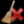

/
/ )in
the dock. widget.
)in
the dock. widget. |
add items |
|
remove items |
|  | clear items |
 |
sort ascending |
 |
sort descending |
| Eukledian distance | Rank items simply by its eucledian distance to the reference example, works well in low dimensional space |
| Cosine Similarity | Measures orientation in the feature space not distance, default sorting method, robust against outliers in one dimension, works well in high dimensional space |
| Classlabels | Sorts items first by class
labes, second wether it is a training example, and third by prediction
probability. |
 |
A white (neutral) square indicates that the item has not been predicted yet. |
 |
A colored solid square indicates the class color i.e. the prediced class. |
| A patterned square with a half circle on top indicates the predicted and annotated class. Color of the square indicates the prediction and the color of the half circle the annotation. Prediction and annotation are not necessarily the same. |

Depending on the input data, CellAnnotator displays one or more color
channels. It is important to know that CellAnnotator does not support RGB
images (3-channels, 8bit only). It supports as many color channels as
there are in the data. The color display also depends on the input data
(the display color is saved to hdf5 along with the numerical image
data).
Multi color mode means particularly that feature vectors from single
channels are always concatenated. Therefore it is not possible to
toggle single channels in the grallery view.
Microscope images are in a lot of cases very dim and at least for display purpose one wants to enhance the contrast parameters i.e. min. and max. value, brightness and contrast. The "Contrast" dock widget supplies this functionality for each channel independently. It can be toggled using the Menu "View"->"Contrast" or using the shortcut "ALT-SHIFT-C".
By default, CellAnnotator is facilitating a Support Vector Classifier. In special cases a One Class Support Vector Machine can be used. Similar to the contrast enhancement there is a dock widget for annotation. There first row contains a combo box to select the classifiert (either support vector classifier or one class svm) and the "Predict"-button. The treeview below depends on the type of the classifier. Only the button box at the bottom of the dock is the same for all classifier types and will be explained below
Each class is represented by a line in the treeview. It
connsist of name, color, the add button (). Name
and color can be changed by clicking on the corresponding field in the
line.
 |
add class to treeview |
 |
remove class from treeview |
 |
open dialog for cross validation & grid search |
| allow reassgin | if this option is disabled (default) it is not possible to annotate a cell which is already annotated to a different class. This option helps to prevent annotation errors. For reannotation in case of already wrong annotated cells enable this option and reannotation is possible without any warning. |
 |
remove annotations - selected items from class |
| clear class definition and remove all items | |
| saves the current classifier to hdf/cellh5 | |
 |
load annotations of a previously defined classifier. |
The Dialogs for saving a classifier and loading annotations are similar. To save a classifier one has to provide a filename a classifier name and a custom description. It is possible to overwrite a classifier which has the same name. To load annotations a drop down menu shows a list of classifiers save in the file. The description is read only. Feature are loaded unnoralized and one has to rerun cross validation.
 |
| Predict | update required: either the parameters of the classifier have or the training set have changed. |
| Predict | no update required |
Open the dialog by clicking on the
button. If possible gridsearch is triggered directly after the dialog
pops up. The dialog consists of three tabs and some buttons at the
bottom.
| Cross Validation | trigger cross validation for the current setup of parameters (no grid search) |
| Grid search | trigger grid search |
| Apply | apply current parameters to the classifier, leave the dialog open |
| Ok | apply current parameters to the classifier and close the dialog |
The first tab (Cross Validation & Grid Search) is to setup some parameters. 5 or 10 fold cross validation, grid size for gridsearch or setup Gamma and the cost parameter manually. The output contains for different measures of accurracy namely Accuracy, F1, Precession and Recall. A detailed description of the measures can be found in the documentation of sklearn python package.
The result of a gridsearch is displayed as a contour plot in a logarithmic scale. The yellow cross hairs indicates the optimal parameters found. The value displayed is accuracy measure mentioned above.

The third tab shows the confusion matrix

Rational: The basic idea of a one class support vector machine is to find anomal objects or outliers that are different for normal objects or inliers. We inverted this idea, we want to find inliers. We also want do minimize the training effort. In a 2 class support vector machine one always hat to train what's an inlier and what's an outlier. Here we train only inliers i.e. during training one annotatates only cells of interest. The drawback a lower robustness against a low number of annotations and the fact that support vectors are usually classifed as outliers (which due to numerical rounding errors). Nevertheless if the number of annotations is high enough the one class svm performs well.
The paremeter setup is slightly different. Since cross validation is not possible one has to setup the parameter semi-manually.
| Nu | Minimum fraction of outliers in the training set (training error). In this use cas it is a valid assumption to have a very low number of training errors. |
| Gamma | Kernel band width: Smaller value means a lower fraction of support vectors, a higher value means more support vectors. To many support vectors can lead to overfitting. |
| Estimate Gamma under the constraint that max. 20% of the training samples are support vectors. The value of 20% can be adjusted in the Preferences dialolg of the application. Nu still has to be set manually. | |
| Add item to the training set (annotate item as inlier). |


| HINT: It is good practices to use size and intecity filters to reduces the number of forground objects. Small objects (<100 px²) can be removed since the origin usually from noise and dim objects origin usually from out of focus cells. Dim out of focus cells have a ragged outline and lot of features evaluate to NAN and have to be removed for classifcation. |
| load on close | Open the data file and load items to the gallery view after closing the dialog |
| close | Close the dialog |
| start | Start image preprocessing for all images |
Segmentation is based on a simple local adpative threshold with gaussian smoothing to reduces noise. Size and intensity filters can be used to remove artefacts. The screenshot below shows the setup dialog. There are three columns: Channels, Segmentation, Features and there is one row for each color channel. The first row is alway for the primary segmentation i.e. the channel where the threshold is applied. All other channel segement only an expanded region depending on the primary segmenation.

| HINT Color channes can be enabled or disabled. Disabled channels will not be preprocessed and are not saved to the data file. |
| Channles 1 | Select the color channel in the drop down menu. The list in the menu is updated automatically if the image directory gets updated. |
| Gallery size | Size of the thumbnails (bounding boxes) around foreground objects. This value is fixed and can#t be changed later on. |
| Watershed | Enable/disable watershed segmentation |
| Seeding size | Size paremeter for finding seed for the watershed segementation. Seeding is applying minimun and maximum filters. This parameter is the the size of the filtes. There is only one seed within an area of radius seeding siye. |
| Z Project | Standard method for z slice selection. (select, minimum projection, mean and maximum proection) |
| Outline smoothing | Smoothes outlines of foreground objects using a morphological closing operation followed by an morphlogical opening. Dim out of focus cells have usually a ragged outline causing a lot of features to be invalid. Smoothing oultines helps to overcome this problem and increases classifier performance. The parameter is the size of the structuring element of the morphological operation. Negative values disable outline smoothing. |
| Min. contrast | Minimum contrast (or threshold) for local adpative threshold segmentation |
| Mean radius | Radius in pixels for the gaussian smoothing filter |
| Mindow size | Window size used for local adaptive thresholding |
| Remove border objects | Removes all foreground objects that thouch the image boundary |
| Fill holes | topologically close all foreground objects |
| Intesity normalisation | Renormalize input images from min/max (by default 0, 255) to unsigned 8 bit images. The range depends on the histogram and datatype of the images |
| Intensity filter | Remove foreground objects outside the range (min, max). A value of -1disables the border e.g. (10, -1) filters all objects with a mean intesity lower than 10 (uint8 grey values) |
| Size filter | Remove forground objects outside the range (min, max). A value of -1 disables the border e.g. (100, -1) filter all objects smaller than 100 px². |
| Intensity Normalisation | Renormalize input images from min/max (by default 0, 255) to unsigned 8 bit images. The range depends on the histogram and datatype of the images |
| Expansion size | Distance between primary outline and expanded outline (any value from 0 to inf) |